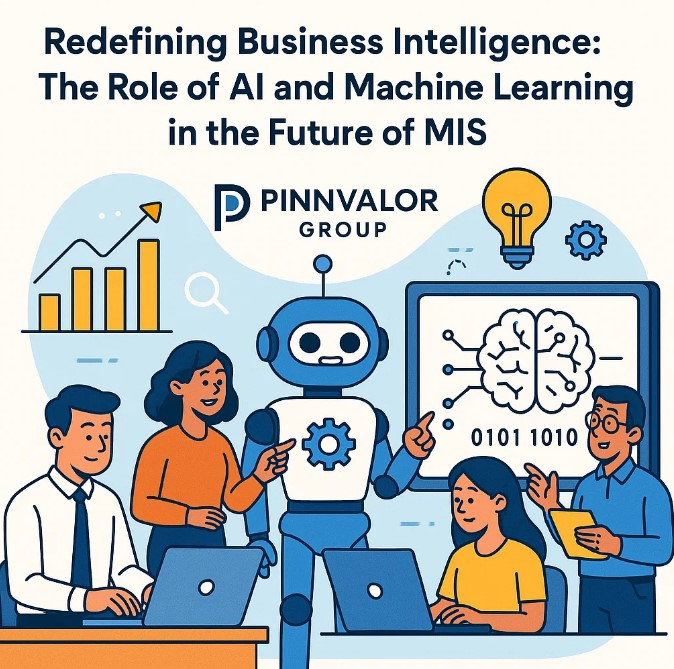

Redefining Business Intelligence: The Role of AI and Machine Learning in the Future of MIS
In today’s data-driven economy, businesses are seeking more than just insights—they’re seeking foresight. The traditional models of Business Intelligence (BI), powered by historical data and static dashboards, are no longer sufficient to navigate the complexities of modern markets. Enter Artificial Intelligence (AI) and Machine Learning (ML)—technologies that are redefining the capabilities of Management Information Systems (MIS) and reshaping the future of business intelligence.
This article explores how AI and ML are transforming MIS from a supportive information system into a strategic decision-making engine, and what that means for the future of business intelligence.
Are your business decisions driven by hindsight—or empowered by intelligent foresight?
Artificial Intelligence is redefining the role of MIS—from a passive data repository to an active, intelligent system that supports smarter, faster, and more accurate business decisions at every level of the organization.
Understanding the Traditional MIS and BI Landscape
Management Information Systems (MIS) have long served as the foundation for data organization, reporting, and managerial decision support. Their primary function has been to consolidate information from various sources, structure it into usable formats, and deliver insights through periodic reporting.
Business Intelligence (BI), traditionally layered on top of MIS, enabled deeper analytical capabilities—trending, slicing, and visualizing historical data to inform strategic planning. However, both MIS and BI have historically suffered from several limitations:
- Reactive insights based on past data
- Limited adaptability to real-time changes
- Heavy reliance on human interpretation and intervention
With the integration of AI and ML, these limitations are being systematically eliminated, ushering in a new era of intelligent, adaptive, and autonomous business intelligence.
The Role of AI and ML in Modern MIS
Artificial Intelligence (AI): AI enables machines to simulate human-like intelligence, including learning, reasoning, and problem-solving. When applied to MIS, AI enhances the system’s ability to analyze complex datasets, identify meaningful patterns, and support strategic decisions with minimal human input.
Machine Learning (ML): ML, a subset of AI, focuses on building models that can learn from data and improve over time. This capability allows MIS platforms to become more predictive and prescriptive, transforming the way businesses approach performance, efficiency, and innovation.
How AI and ML Are Redefining Business Intelligence
1. Predictive and Prescriptive Analytics
With ML algorithms, MIS can go beyond descriptive statistics to:
- Predict future outcomes such as customer churn, inventory needs, or financial performance
- Prescribe optimal actions based on data-driven simulations and scenario modeling
This shift enables businesses to anticipate trends, rather than just respond to them.
2. Real-Time Decision-Making
AI-enhanced MIS can process streaming data in real time, allowing organizations to:
- Detect operational anomalies instantly
- Adjust to market shifts dynamically
- Make time-sensitive decisions without delay
3. Enhanced Data Accuracy and Quality
ML models can automate the cleaning, transformation, and integration of data from multiple sources. By identifying duplicates, inconsistencies, and anomalies, AI ensures that BI insights are based on high-quality, trustworthy data.
4. Natural Language Interfaces and Democratization of Data
Modern AI-powered MIS platforms are equipped with Natural Language Processing (NLP), enabling users to interact with systems conversationally. For example:
“Show me last month’s top-performing regions in terms of sales.”
This functionality makes business intelligence more accessible across departments, reducing reliance on technical analysts and fostering a data-informed culture.
5. Intelligent Automation
AI and ML significantly reduce the time and effort required for:
- Generating reports
- Scheduling data pulls
- Monitoring performance indicators
This automation improves operational efficiency and allows decision-makers to focus on strategy rather than manual data tasks.
Industry Applications and Impact
- Financial Services: Banks use AI-driven MIS to detect fraud in real time, personalize client offerings, and optimize portfolio strategies using predictive risk analytics.
- Healthcare: Hospitals leverage intelligent MIS to predict patient readmissions, optimize treatment plans, and manage resource allocation dynamically.
- Retail and E-Commerce: Retailers utilize AI to forecast demand, manage inventories, personalize marketing, and optimize supply chain logistics.
- Manufacturing: In manufacturing, AI-powered MIS systems support predictive maintenance, improve production scheduling, and minimize operational downtime.
Challenges and Strategic Considerations
1. Data Governance and Ethics
AI-driven decisions must be transparent, explainable, and compliant with regulations (e.g., GDPR, HIPAA). Organizations must prioritize ethical data use.
2. Infrastructure Readiness
Legacy MIS platforms may lack the processing power and flexibility to support AI/ML tools. Cloud migration and modular systems are often prerequisites for transformation.
3. Skill and Talent Gaps
There is a growing need for professionals who can bridge the gap between data science and business strategy. Organizations should invest in training and cross-functional teams.
4. Cost and ROI
The initial investment in AI integration can be significant. Businesses must align AI initiatives with clearly defined goals to ensure measurable return on investment.
The Strategic Future of MIS
As AI and ML become integral to MIS, we can expect a shift in its strategic role:
- From reactive systems to predictive engines
- From reporting tools to decision-support ecosystems
- From data storage hubs to real-time cognitive systems
Future MIS platforms will not only inform decisions but collaborate with human users, offering recommendations, running simulations, and even executing routine decisions autonomously.
Conclusion
The fusion of AI and Machine Learning with Management Information Systems marks a new chapter in the evolution of business intelligence. By redefining how data is processed, analyzed, and applied, these technologies are turning MIS into a cornerstone of agile, intelligent, and future-ready enterprises.
For organizations ready to lead in the digital age, the imperative is clear: Embrace AI-powered MIS or risk falling behind.